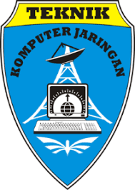
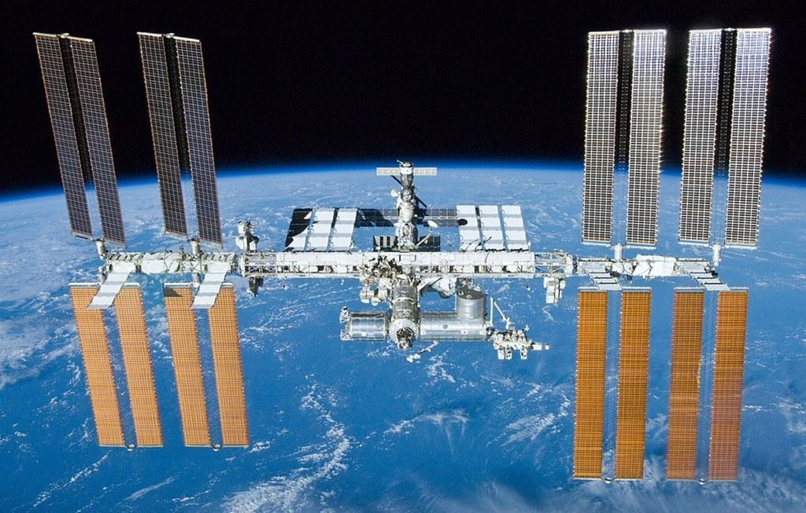
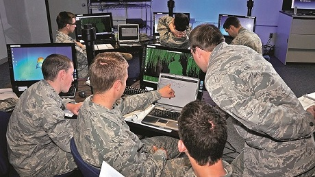

teknik jaringan komputer dan telekomunikasi
web page:
beranda
jelajahi lebih dalam
following us & help center
lebih dalam
Di era digital ini, teknologi komputer dan jaringan telekomunikasi memainkan peran yang sangat penting dalam berbagai bidang maju,
seperti pemerintahan, militer, fisika, dan eksplorasi luar angkasa. Penggunaan teknologi ini tidak hanya mempercepat proses kerja
tetapi juga meningkatkan efisiensi, keamanan, dan inovasi. Artikel ini akan membahas bagaimana komputer dan jaringan telekomunikasi berkontribusi dalam bidang-bidang tersebut.
pemerintahan
Dalam pemerintahan, teknologi komputer dan jaringan telekomunikasi digunakan untuk meningkatkan layanan publik dan efisiensi operasional. Beberapa peran utamanya meliputi:
- E-Government: Pemerintah menggunakan platform digital untuk menyediakan layanan publik seperti pembayaran pajak, pendaftaran kendaraan, dan layanan kesehatan. Hal ini mempermudah akses bagi masyarakat dan mengurangi birokrasi.
- Transparansi dan Akuntabilitas: Sistem digital memungkinkan pelacakan dan dokumentasi yang lebih baik, sehingga meningkatkan transparansi dalam administrasi publik dan meminimalisir korupsi.
- Pengambilan Keputusan Berbasis Data: Dengan analisis data yang canggih, pemerintah dapat membuat kebijakan yang lebih tepat sasaran dan efisien.
- Digital Forensik: Teknologi komputer dan jaringan telekomunikasi digunakan untuk investigasi dan analisis bukti digital. Digital forensik membantu dalam memeriksa kejahatan siber, pelanggaran hukum, dan insiden keamanan dengan melacak aktivitas digital dan mengumpulkan bukti dari perangkat elektronik
fisika

Dalam bidang fisika, khususnya fisika teoretis dan eksperimental, teknologi komputer dan jaringan telekomunikasi memfasilitasi penelitian dan eksperimen yang kompleks. Beberapa perannya adalah:
- Komputasi Berkecepatan Tinggi: komputer digunakan untuk melakukan simulasi dan pemodelan fenomena fisik yang rumit, seperti dinamika fluida dan reaksi nuklir
- Kolaborasi Global: Jaringan telekomunikasi memungkinkan para ilmuwan dari seluruh dunia untuk bekerja sama dalam proyek penelitian besar seperti CERN (Organisasi Eropa untuk Riset Nuklir).
- Pengolahan Data Besar: Eksperimen fisika sering kali menghasilkan data dalam jumlah besar yang membutuhkan analisis komputasi intensif untuk mendapatkan hasil yang akurat
- Komputer Kuantum: Komputer kuantum menawarkan potensi revolusioner dalam pemrosesan data dengan kecepatan dan efisiensi yang jauh melampaui komputer klasik. Teknologi ini dapat mengubah cara kita memahami dan memecahkan masalah kompleks dalam fisika, seperti simulasi material kuantum dan pemodelan fenomena alam yang mendalam.
astronomy

Dalam eksplorasi luar angkasa, teknologi komputer dan jaringan telekomunikasi menjadi tulang punggung misi-misi yang kompleks dan berisiko tinggi. Beberapa kontribusinya adalah:
- Pengendalian Misi: Komputer dan jaringan telekomunikasi memungkinkan pengendalian jarak jauh terhadap pesawat luar angkasa dan rover di planet lain, seperti Mars Rover.
- Analisis Data Ilmiah: Data yang dikumpulkan dari misi luar angkasa, seperti teleskop Hubble atau satelit observasi, dianalisis menggunakan komputer canggih untuk memahami alam semesta.
- Komunikasi Antar Planet: Jaringan komunikasi memungkinkan transmisi data antara bumi dan pesawat luar angkasa yang berada di jarak yang sangat jauh, memastikan kelancaran misi dan keselamatan astronot
- proyek Starlink: Salah satu inovasi terbaru yang sedang hangat diperbincangkan adalah Starlink, proyek milik SpaceX yang bertujuan untuk menyediakan internet broadband berkecepatan tinggi ke seluruh dunia menggunakan konstelasi satelit di orbit rendah Bumi. Teknologi ini tidak hanya akan mengubah cara kita mengakses internet di daerah terpencil tetapi juga memiliki potensi aplikasi dalam komunikasi luar angkasa.
militer

Dalam bidang militer, teknologi komputer dan jaringan telekomunikasi sangat vital untuk operasi modern. Berikut adalah beberapa aplikasinya:
- Komando dan Kontrol: Sistem komputer dan jaringan telekomunikasi memungkinkan pengelolaan dan pengendalian operasi militer secara real-time, memastikan koordinasi yang efisien antara unit-unit yang tersebar
- Intelijen dan Pengintaian: Teknologi ini digunakan untuk mengumpulkan dan menganalisis data intelijen dari berbagai sumber, termasuk satelit dan drone, guna memberikan informasi strategis yang akurat
- keamanan Siber: Perlindungan terhadap ancaman siber menjadi prioritas utama, mengingat banyaknya serangan yang dapat melumpuhkan infrastruktur kritis militer.
Teknologi komputer dan jaringan telekomunikasi telah menjadi pilar penting dalam berbagai bidang maju, memberikan kontribusi signifikan dalam efisiensi, keamanan, dan inovasi. Dengan terus berkembangnya teknologi ini,
kita dapat mengharapkan kemajuan yang lebih besar di masa depan dalam pemerintahan, militer, fisika, dan eksplorasi luar angkasa.
Implementasi yang tepat dan pengembangan berkelanjutan akan membuka peluang baru dan memperkuat fondasi kemajuan teknologi di berbagai bidang.
prospek kerja Bidang Komputer dan Jaringan Telekomunikasi di Berbagai Bidang yang lebih maju
Teknologi komputer dan jaringan telekomunikasi telah membuka berbagai peluang karir di bidang pemerintahan, militer, fisika, eksplorasi luar angkasa, dan keamanan siber. Berikut adalah beberapa contoh bidang pekerjaan yang relevan:
pemerintahan
- Analis Data Pemerintahan: Menganalisis data untuk membantu pembuatan kebijakan dan meningkatkan efisiensi layanan publik.
- Pakar Digital Forensik: Menyelidiki dan menganalisis bukti digital terkait kejahatan siber dan pelanggaran hukum
- Manajer Keamanan Siber Pemerintah: Mengelola dan melindungi infrastruktur teknologi informasi pemerintah dari ancaman siber.
fisika
- Peneliti Komputasi Berkecepatan Tinggi: Menggunakan superkomputer untuk melakukan simulasi dan pemodelan fenomena fisik.
- Ilmuwan Data Fisika: Menganalisis data dari eksperimen fisika untuk menemukan pola dan mengembangkan teori baru.
- Pakar Komputer Kuantum: Meneliti dan mengembangkan aplikasi komputer kuantum dalam fisika dan bidang lainnya.
- Kolaborator Proyek Internasional: Bekerja dalam tim global pada proyek penelitian besar seperti di CERN.
astronomy
- Insinyur Pengendalian Misi: Mengelola operasi jarak jauh dari pesawat luar angkasa dan rover.
- ilmuwan Data Luar Angkasa: Menganalisis data yang dikumpulkan dari misi luar angkasa untuk penelitian ilmiah.
- Spesialis Komunikasi Antar Planet: Mengembangkan dan mengelola sistem komunikasi untuk misi luar angkasa.
- Pengembang Teknologi Satelit: Bekerja pada proyek seperti Starlink untuk mengembangkan dan mengelola konstelasi satelit
military
- analist Intelijen: Mengumpulkan dan menganalisis data dari berbagai sumber untuk memberikan informasi strategis
- Pakar Keamanan Siber Militer: Melindungi sistem militer dari serangan siber dan mengembangkan strategi pertahanan.
- Spesialis Komando dan Kontrol: Mengelola sistem teknologi informasi yang digunakan dalam operasi militer.
- insinyur Sistem Pertahanan: Merancang dan mengembangkan teknologi pertahanan berbasis komputer dan jaringan.
teknologi komputer dan jaringan telekomunikasi telah menjadi pilar penting dalam kemajuan di berbagai sektor.
Karir-karir ini tidak hanya menawarkan kesempatan untuk bekerja di garis depan inovasi tetapi juga memainkan peran kunci
dalam membentuk masa depan teknologi dan masyarakat. Dengan latar belakang yang tepat dalam teknologi informasi dan telekomunikasi,
profesional dapat mengejar karir yang dinamis dan berpengaruh di bidang-bidang maju ini.